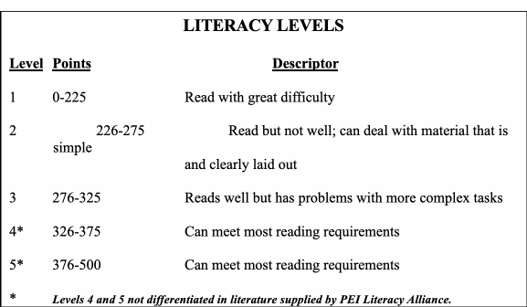

December 30, 2008
COMMUNITY FOUNDATION OF PRINCE EDWARD ISLAND
Notes prepared by Don Glendenning
As background to a
Proposed Literacy Fund
The notes that follow are provided only as a basis for discussions between the Community Foundation and a potential donor. The document does not pretend to be a thorough review nor is it a plan of action for the sector in general.
What is literacy?
Literacy is defined as the ability to understand and use printed information at home, at work, and in the community to achieve one’s goals and develop ones knowledge and potential. Traditional descriptions identify the following components or kinds of literacy:
Prose - the ability to find and use information contained in text such as newspapers, magazines, textbooks and tourist literature.
Document – the ability to find and use maps, charts and employment forms,
Numeracy – the ability to find and manipulate numbers in relation to such tasks as keeping household records, placing an order, checking a grocery bill and tipping for a pizza delivery.
Problem solving – the ability to analyze information related to a given situation and generate appropriate responses
Recent literature and discussions with people in the field, however, often reveal additional components including:
Oral communications – ability to provide or obtain information through speech and gesture.
Computer skills – the ability to use computers and related technologies
Working relationships – the ability to get along with other people
Levels of Literacy
A recent International Adult Literacy Survey identifies the following five levels of literacy with Level 3 being the “Proficiently level for a modern economy and knowledge-based society”:

Although offered as levels of literacy, in fact, the statements above only refer to the reading component; I believe that levels are available for other components but did not come to hand during my review. Further definition is needed as well, as an anchor or benchmark. The following is my suggestion for a benchmark:
A person operating at level three is able to read the daily newspaper and accompanying flyers and converse with others about items read.
PEI Demographics
Although my review did not provide the clear and sharp statistics that I had hoped for, there is not doubt about the need for training in literacy both in Canada and in PEI. Statistics that I reviewed show that:
According to the 2001 census, 36,720 Islanders had less than high school graduation
According to the 2001 census, the population of Prince Edward Island was 137,300 of which 94,000 were between the ages of 15 and 65, 19,500 were over age 65.
About 30% of PEI adults have very low literacy rates.
Average literacy rates for PEI adults age 16 and older are below level three.
According to Statistics Canada the percentage (42%) of Canadians with low levels of literacy did not change between 1994 to 2003
Current PEI Activities/offerings
Literacy training is provided by a variety of organizations and, as a result and each agency seems to do its own thing. There is not a single agency tasked with either planning or implementing literacy activities; this makes the gathering of statistics almost impossible. The major providers and funders in the literacy field are:
School system – focused on literacy training within the public school system and has a number of pilot projects under way.
Holland College – thought by some in the field to provide 90% of literacy training with grants flowing from the PEI Labour Market Fund. Although not identified as literacy training, the College annual report for 2007 shows 540 full time students and 544 part time students in adult education courses.
Department of Technology and Advanced Education – provides for a full-time Secretariat to encourage and support literacy training through a combination of technical assistance and small grants.
PEI Literacy Alliance – with about 30 institutional members provides funds and financial assistance to individuals and organizations engaged in the delivery of literacy training. The major fund raiser for the Alliance is the Peter Gzowski annual golf tournament.
Other players (most being members of the PEI Literacy allowance) include:
Aids PEI
Canadian Mental Health Association – PEI
Charlottetown Rotary Literacy Foundation - $5,000 each year in grants
Community Legal Information Association
Early Childhood Development Association
Education Assessment Program
Frontier College
Holland College
Service Canada
Learning Disabilities Association of PEI
Movement for Canadian Literacy
PEI Association of Newcomers to Canada
PEI Association for community Living
PEI Council for People with Disabilities
PEI Department of Education
PEI Federation of Labour
PEI Home and School Federation
PEI Literacy Initiatives Secretariat
PEI Professional Librarians Association
PEI Teachers’ Federation
PEI Provincial Library Service
PEI Volunteers for Literacy
PEI Women’s Network Inc
Societe educative de l’lle-du-Prince Edouard
Seniors United Network
Transition House Association
University of Prince Edward Island
Workplace Training PEI Inc.
In addition, literacy instruction is also provided by some employers for their own employees; the Provincial Government has initiated an extensive program for its own employees. Instruction is also provided by volunteers through a “one-on-one” arrangement.
Funding sources
Funding arrangements for literacy instruction is complex and, again, I was not able to arrive at a global figure. The larges source flows from the Labour Market Development Funds most of which goes to Holland College. The following list appears to be the most frequent sources of funds:
Government of PEI
Government of Canada
Fund raising
PEI Literacy alliance
Public school system
Grants from either federal of Provincial Departments and agencies usually resulting from proposals submitted by an individual or organization.
Program components:
The following components must be taken into account when planning a training program:
Facilities – classrooms, conference rooms, one-on-one teaching spaces, workplace settings, libraries,
Staff - planners, administrators, teachers, volunteers, assessors
Resource materials – written, spoken, visual, technology based
Methodology – teaching techniques and strategies
Assessment – rating scales, benchmarks, instructional assessment, placement tools,
Financial support – students, instruction, assessment
Research – access to research, best practices,
Learner support – family, employers, accepting teachers
Learner records – transcripts, certification,
Observations/conclusions
Clients fall into two broad categories – adults and young people still in school; there has been little improvement in levels of literacy in either group in past decade
There is little exchange of information among service providers
Services to adults, except for programs offered at Holland College, are quite ad hoc and often depend on annual applications for funding
There is a stigma attached to the term literacy; literacy may be an acceptable umbrella term but offerings to individuals should more specific - reading, problem solving, etc.
One piece of research suggested that what is provided is at odds with what is needed.
There is a view that the way schools are organized is at odds with requirements for successful literacy programs (classroom schedules, annual reassignments of teachers, etc)
Schools could benefit from some approaches used by private schools
No person or position has an overall view of literacy or is in charge of the response
Bursaries can play be an important motivator especially for people moving from Level two to level three.
It has been suggested that the “best bang for the buck” comes from helping people move beyond level two
Project considerations:
A clear focus
Objectives that are measurable
Family support and participation
Clearly stated competencies and identified levels of performance
Solid project documentation
Roles of other stakeholders
A 3-5 year time frame
An evaluation component
Partnerships
Minimal bureaucracy
Clear decision-making authority
Replicability
Results potentially applicable else where
Some Projects/scenarios:
While the literacy sector can benefit from a great variety of interventions, the following would appear to be appropriate initial entry points:
A defined geographic community providing support to children, youth and adults alike whether in school, at work or at home.
A workplace-based project either in a geographic community or a sector
Early childhood, perhaps again in a defined community, focused on reading readiness and family support.